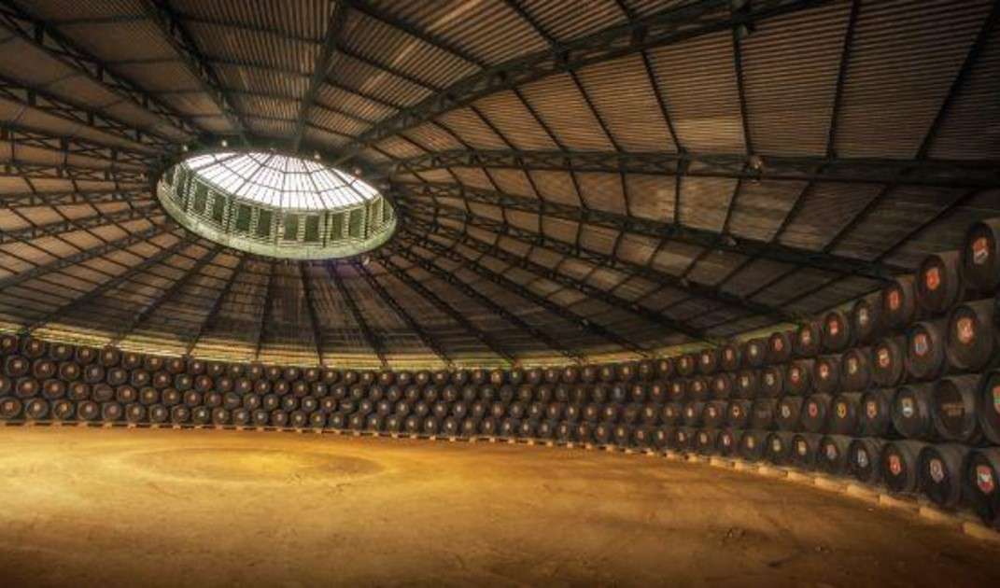

<!DOCTYPE html>
<html>
<head>
    <title>Vi i Cava</title>
    <meta name="viewport" content="width=device-width, initial-scale=1.0, maximum-scale=1.0, user-scalable=no">
    <link rel="stylesheet" href="css/leaflet.css">
    <script src="js/leaflet.js"></script>
    <style>
        body{ padding: 0;
      margin: 0;
        }
        html, body, #map {
            height: 100%;
            width: 100%;
        }
    </style>
</head>
<body>
    
   <a href="../../index.html">
   </a>

    <div id="map"></div>
    <script>

// Tile layer
let osm = L.tileLayer("https://{s}.tile.openstreetmap.org/{z}/{x}/{y}.png", {attribution: '&copy; <a href="https://www.openstreetmap.org/copyright">OpenStreetMap</a>'});

// Coordinates array (lat-lon)
coords = [
    [37.3399964, -4.5811614],
    [42.72865305, -1.97383746697463],
    [42.7550800, -7.8662100],
    [41.8204600, 1.8676800],
    [42.5999, -5.57175],
    [39.4177902, -2.6232332],
    [39.4937392, -6.0679194],
    [42.2814642, -2.48280497507047],
    [41.5976275, -0.9056623]
];

// Markers
let pnt = L.layerGroup();
L.marker(coords[0]).bindPopup("<b>Andalusia:</b><br>Tío Pepe–González Byass<br>").addTo(pnt);
L.marker(coords[1]).bindPopup("<b>Pais Vasc:</b><br>Herederos del Marqués de Riscal<br>").addTo(pnt);
L.marker(coords[2]).bindPopup("<b>Galícia:</b><br>Mar de Frades<br>").addTo(pnt);
L.marker(coords[3]).bindPopup("<b>Catalunya:</b><br>Torres<br>").addTo(pnt);
L.marker(coords[4]).bindPopup("<b>Castella i Lleó:</b><br>Vega Sicilia<br>").addTo(pnt);
L.marker(coords[5]).bindPopup("<b>Castella la Manxa:</b><br>Valdepeñas<br>").addTo(pnt);
L.marker(coords[6]).bindPopup("<b>Extremadura:</b><br>Ruiz Torres<br>").addTo(pnt);
L.marker(coords[7]).bindPopup("<b>La Rioja:</b><br>Olarra<br>").addTo(pnt);
L.marker(coords[8]).bindPopup("<b>Aragó:</b><br>Batán de Salas de Beroz<br>").addTo(pnt);


// Map
let map = L.map('map', {center: [40, -3], zoom: 6, layers: [osm, pnt]});

let overlayMaps = {
    "Sites": pnt,
    "Travel Path": line
};
L.control.layers(baseMaps, overlayMaps, {position: "topleft", collapsed: false}).addTo(map);

    </script>
</body>
</html>
